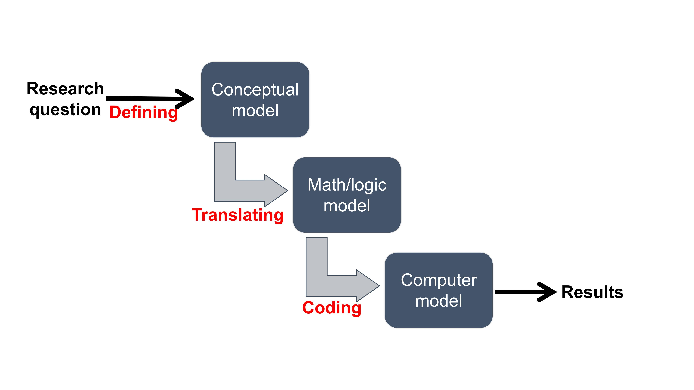
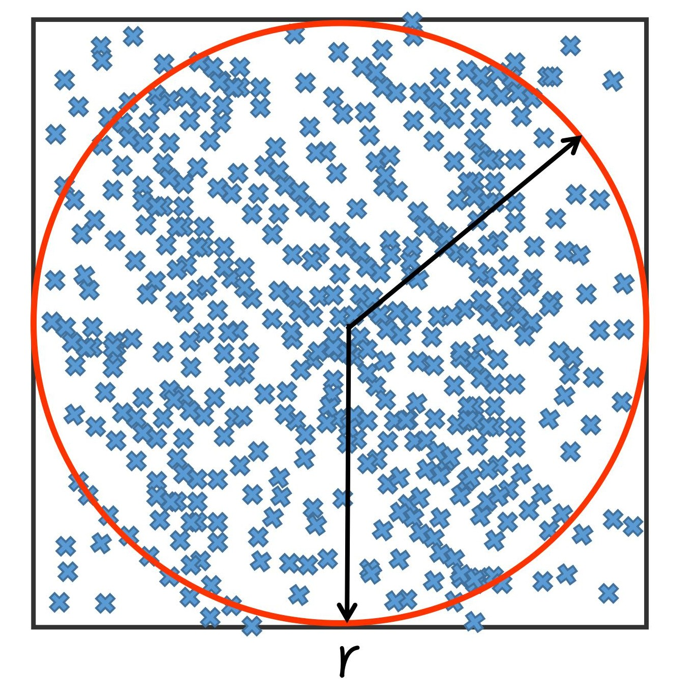
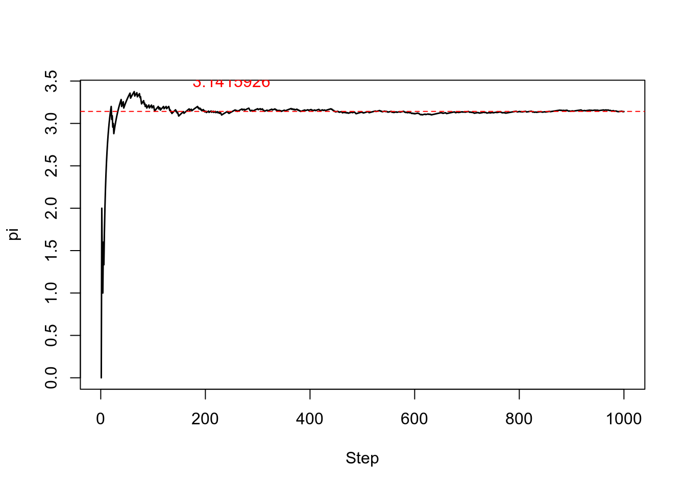
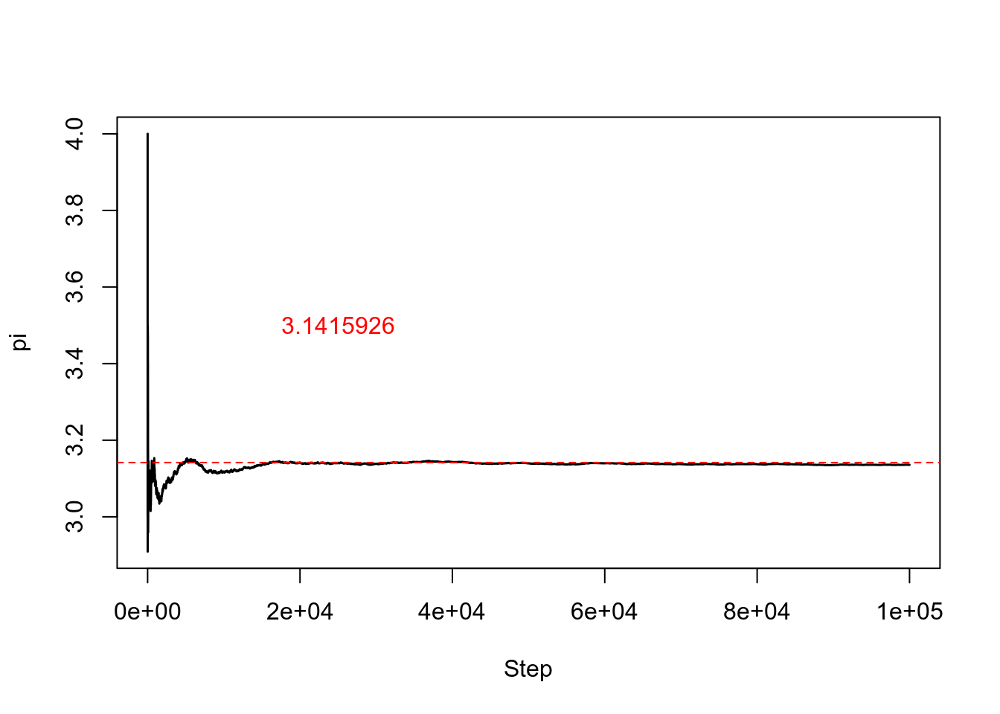

Section 01 Introduction
“Without coding, computers would literally do nothing. They would be completely useless. That’s because source code is the set of instructions that tells the computer what to do. Computers have no free will, after all, so without explicit instruction, they’re just sophisticated hunks of metal.” - Travis Addair, Software Engineer, on Quora.
Background Poll
1. On a scale of 0 (not any) to 10 (sophisticated), how to describe your programming experience?
2. Are you familiar with the following languages?
- FORTRAN
- C
- C++
- Java
- Other
- I know English, maybe some Cantonese
3. Do you use the following languages for data analysis?
- MATLAB
- Python
- R
- IDL
- Other
- No, I don’t
4. What do you use for data visualization?
- MATLAB
- Python
- R
- IDL
- Origin
- Other (but not Excel or similar spreadsheet software)
- I use Excel, sometimes Power-point
5. Have you heard about Git?
- Yes
- No
6. Do you know how to use command-lines?
- Yes, I know DOS
- Yes, I know Linux/Unix terminal
- No, what’s a command-line?
7. What is your laptop’s operating system (OS)?
- Windows
- macOS
- Ubuntu
- Other
8. In your view, why is programming necessary? (open question)
- Research
- Job hunting
- Just for fun
- Other
9. In your view, why is programming hard? (open question) 1
- Oh, I’m just really not a math person
- Programmers are elite hackers, like in movies
- I need a computer science degree to write code
- Programmers should be immediately good at all things about the computer
- Other
10. Name one thing you want to achieve at the end of the semester (open question)
Course topics
Research in the ESE field (In fact, any field) is all about data:

Hopefully, this course will make your life easier when it comes to interpret and visualize data.
Course topics:
- Three languages: R, Shell (BASH), and FORTRAN
- One operation system: Linux
- At the end of the semester, you should be able to:
- Handle common file formats with R
- plain text, .csv, .nc, .hdf, .RData, etc.
- Work with data neatly
- Dataframe, dplyr, tidyr
- Proceed statistical sleuth with R
- comparing distributing, ANOVA, regressions, etc.
- comparing distributing, ANOVA, regressions, etc.
- Make time series analysis with R
- MA, AR, seasonal decomposition, ARIMA, forecasting, etc.
- Conduct spatial analysis with R
- raster and shape files, interpolation, spatial regression, etc.
- Create publication-quality figures with R
- ggplot, image.plot, lattice, etc.
- Use Git for version control
- Github, GitKraken, etc.
- Write, compile, and run FORTRAN scripts
- gfortran, intel-fortran, functions, modules, etc.
- Use the Linux environment
- basics, BASH scripts, installing software, loading modules, etc.
- Run jobs on TaiYi high-performance computer
- SSH, managing jobs, scp, etc.
- [Optional] Build and launch a website
- Rmarkdown (In fact, this website is built with Rmarkdown), Parallel computing in R
- [Optional] Use other useful tools
- CDO, Panoply, hdfview, MRT, etc.
- Handle common file formats with R


Course structure
- Thursday class
- New material demonstrated (50 mins)
- In-class exercises (50 mins)
- Tuesday class (odd week only)
- In-class exercises (50 mins)
- Working on assignments
- Discussing the final project
- One-on-one interactions
- Office Hours to discuss specific questions
Course grading
- Assignments (50%)
- Final project (40%),
- Class participation (10%)
Take the course or not?
This course is designed for ESE graduate students having no or weak programming background, with emphasis on R, FORTRAN, Git, and Linux.
Good reasons for not taking the course:
- After browsing the syllabus and schedule, there is nothing new for me
- I have a strong programming background with other tools (C, C++, Java, MATLAB, Python, IDL, etc.)
- I am able to model, analyze, and visualize data sets through programming efforts already
- I want to learn other programming languages (C, C++, Java, MATLAB, Python, IDL, etc.)
- I want to take an “easy” class to meet the graduation requirement
- I don’t want to spend much time on the course; instead, I want to focus more on my research
Bad reasons for not taking the course:
- I don’t have coding/programming experience
- Programming is intimidating; perhaps I can never learn it
- My project does not require programming efforts
By taking the course, you commit yourself to work on time-consuming assignments and final project.
A closer look at programming process

Very often, we find programming difficult because we fail to break down the initial research question into small parts, which I refer as conceptual model, math or logic model, and computer model. The most crucial step is to have a well-defined conceptual model. This involves simplifying and generalizing your initial question so that you can describe the gist in one sentence. Once you have a well-defined conceptual model, building a math or logic model would become straightforward. And coding is just the last step of the programming process where you use suitable languages and tools to let the computer know what you exactly want to do. The above process of programming, however, can not be ideal as you can probably not make it with one shot. In reality, you need to modify those models iteratively before finally solving the question, so the chart would be more like as follow.

An example: Estimation of \(\pi\)
Now suppose our research question is:
Question: How to estimate the number of \(\pi\)?
Your ideas
Can you think about a few ways to solve this?
Hints
If r is the radius of a circle, then the surface of this circle is \(\pi*r^{2}\). Therefore, if we know the radius of a circle, and the surface of this circle, we can estimate \(\pi\). Then how can we estimate the surface of a circle?
A circle (red) in a square (black) is our solution. Indeed, this is very easy to know the surface of a square. It is the square of the length of one of its sides. Do you see where this is leading us? What if we were able to estimate the rate between the surface of the circle and the surface of the square? Then we would know the surface of the circle.

Finally, we just need to estimate (surfaceCircle/surfaceSquare). We can apply the Monte Carlo method here. If we uniformly drop N random points (blue) in the square and count how many of them are in the circle, then we have a proxy of the quantity surfaceCircle/surfaceSquare. 2
The conceptual model
Following the above idea, the conceptual model would be: The proportion between the number of points within the circle (n) and the square (N) is equal to surfaceCircle/surfaceSquare.
The math model
Simply translating the conceptual model, we have \[n/N = \pi / 4\]
The computer model
Put this in R, and the code would be like 3
# Define a function to compute pi
Simulation <- function(N){
c <- rep(0,N)
numberIn <- 0
for(i in 1:N){
x <- runif(2,-1,1)
if(sqrt(x[1]*x[1] + x[2]*x[2]) <= 1){
numberIn <- numberIn + 1
}
prop <- numberIn / i
piHat <- prop *4
c[i] <- piHat
}
return(c)
}Let’s start by drawing 1000 random points
# Draw 100 points
TotalDraw <- 1000
Results <- Simulation(TotalDraw)
# Plot
plot( seq(1,TotalDraw,by=1), Results, type='l', xlab='Step', ylab='pi',lwd=1.5)
abline(h=3.141592,col="red",lty=2)
text(0.25*TotalDraw,3.5,"3.1415926",cex=1,col="red")
## [1] "Mean Pi from the last 100 steps is: 3.17932111717877"Simulation with 100,000 random points yields a better result
# Draw 1E5 points
TotalDraw <- 1E5
Results <- Simulation(TotalDraw)
# Plot
plot( seq(1,TotalDraw,by=1), Results, type='l', xlab='Step', ylab='pi',lwd=1.5)
abline(h=3.141592,col="red",lty=2)
text(0.25*TotalDraw,3.5,"3.1415926",cex=1,col="red")
## [1] "Mean Pi from the last 100 steps is: 3.13025285747024"In-class exercises
Brainstorm one research question
What is the conceptual model?
What is the math/logic model?